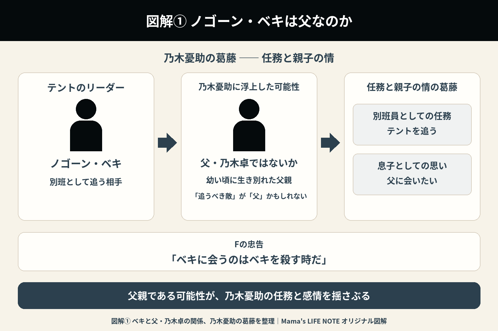
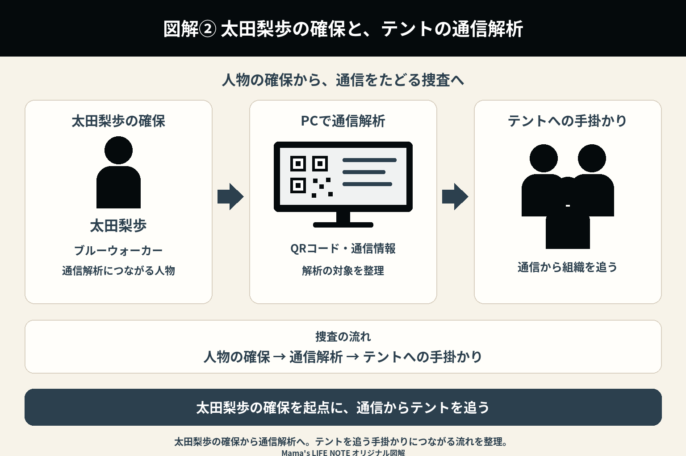
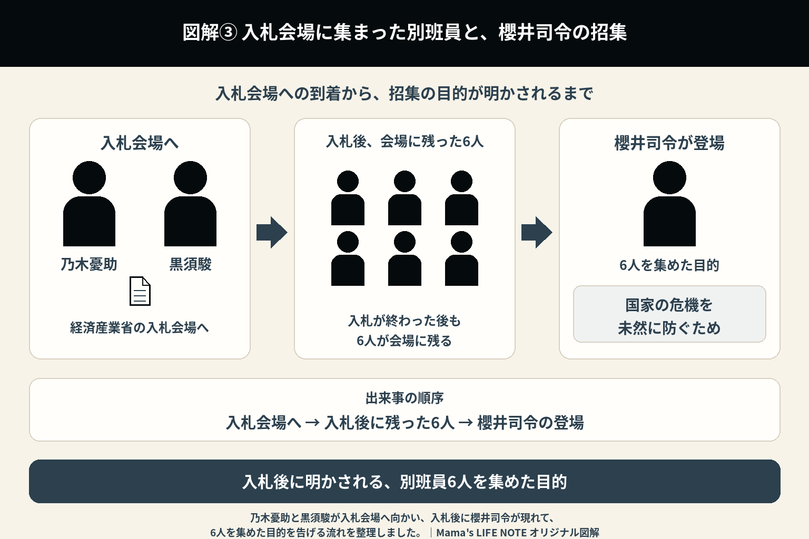

『VIVANT』第6話（2023年8月20日放送）
※第6話は、「テントのリーダー・ノゴーン・ベキ」と「乃木憂助」の関係が大きく動き始める回。さらに、Fが生まれた理由も初めて明かされる。

1. ベキの正体に乃木憂助は衝撃を受ける
第5話で別班の隊員であることが明かされた乃木憂助は、新たな情報を受け取る。
その内容は、テントのリーダー、ノゴーン・ベキが、幼い頃に生き別れた父親・乃木卓ではないかというものだった。
これまで別班として「倒すべき敵」だと思っていた人物が、自分の父親かもしれない――。
この事実は乃木憂助に大きな衝撃を与える。
任務を優先すべきか、それとも父親に会いたいという気持ちを優先すべきか。乃木憂助は初めて大きく心を揺さぶられる。
乃木憂助はアリとその家族を逃がすため、飛行機を手配した。
アリは組織の恐ろしさを乃木憂助に伝え、最後に謎の番号が書かれた紙を渡す。そして、「有効期限は残り5日だ」と告げた。
2. Fが生まれた理由
この回では、乃木憂助の頭の中にいる「F」がどのように生まれたのかも語られる。
幼い頃、戦乱の中で家族と離れ離れになり、極限状態を生き抜かなければならなかった乃木憂助。
人身売買された後、乃木憂助は別人格の「F」と出会った。
その過酷な経験の中で、自分自身を守るために生まれたのが、「F」というもう一つの人格だった。
乃木憂助はノゴーン・ベキに会いたいと感じていたが、Fは「ベキに会うのはベキを殺す時だ」と忠告する。
これまでFは冷静な助言役として描かれてきた。しかし、第6話を見ると、Fは単なる幻覚ではなく、乃木憂助が生き延びるために必要な存在だったことが理解できる。

3. 野崎守も真実へ近づく
公安の野崎守も、独自の捜査を続けている。
テントが現場に残すマークが乃木家の家紋に似ていることに気付き、「乃木憂助とテントには何らかの関係があるのではないか」という考えにたどり着く。
また、野崎守は、乃木卓がかつて公安の刑事だったことを知った。
しかし、「乃木憂助が別班である」という最も重要な事実だけは、まだ知らされていない。
野崎守は一歩ずつ真実へ近づいているものの、あと一歩届かないもどかしさが続く。
4. ジャミーンの手術
一方、日本ではジャミーンの心臓手術が行われる。
柚木薫をはじめ、多くの人が成功を願う中、緊張感のある手術が進められる。
これまで過酷な運命を背負ってきたジャミーンにとって、この手術は新しい人生への大きな一歩となる。
手術は無事に終わり、ジャミーンは目を覚ました。柚木薫と乃木憂助は、抱き合って喜んだ。
柚木薫は乃木憂助を意識するようになり、乃木憂助も柚木薫に「薫が好き」と伝えた。
事件とは別の物語ではあるが、この場面は視聴者にとっても心温まるシーンだった。
5. ベキという人物
テントのリーダーであるノゴーン・ベキの姿も、少しずつ描かれる。
冷酷なテロ組織の指導者という印象だけではなく、部下から強い信頼を集める人物であることも分かってくる。
一方で、裏切りに対しては一切の情けを見せず、組織の規律を守るためなら厳しい制裁も下す。
テントの会議では、誤送金の際に金を着服したギリアムという人物が追い詰められていた。
ノゴーン・ベキは映像を確認し、ギリアムを日本刀で殺害した。
敵ではあるものの、一筋縄では語れない人物像が少しずつ浮かび上がってくる。
6. 太田梨歩の確保
太田梨歩が保釈され、野崎守は、別班が保釈金1億円を払って太田梨歩を「買った」とにらむ。
黒須駿は太田梨歩のために住居を用意し、アリのメモを解読させた。
アリのメモはQRコードになっており、太田梨歩は限られた時間の中で解析を急ぐ。
その後、乃木憂助に緊急連絡が入り、黒須駿と太田梨歩のもとへ向かった。
太田梨歩は、2人が本当に別班なのかを疑い、自殺しようとしていた。しかし、乃木憂助が山本巧を殺害する動画を見せたことで、太田梨歩は2人を信じるようになる。
そこへ、野崎守たち公安がやって来た。
しかし、乃木憂助は壁に穴を開け、隣の部屋にPCなどを隠していた。野崎守たちは令状を持っていなかったため、捜索を諦めて退散した。
太田梨歩は無事に解析に成功する。表示された文言を見た乃木憂助と黒須駿は、息をのんだ。

7. テントの本当の姿はまだ見えない
別班も公安もテントを追っているが、第6話の時点では組織の全貌はまだ分からない。
単なるテロ組織なのか。
それとも、別の目的を持っているのか。
ノゴーン・ベキの人柄も含め、「本当に悪なのか」という新たな疑問が生まれ始める。
視聴者にとっても、それまでの「テント＝悪」という印象が少し揺らぎ始める回だった。
8. 新たな戦いへ
第6話の終盤、乃木憂助は、父親かもしれないノゴーン・ベキと向き合う覚悟を固める。
別班として任務を遂行するのか。
それとも、父と子として会うのか。
後日、乃木憂助と黒須駿は経済産業省の入札会場へ向かった。
入札後、会場に残った面々の前に、別班の司令塔である櫻井里美が現れた。
櫻井里美は、「あなた方6人に集まってもらったのは、他でもなく国家の危機を未然に防ぐためです」と告げる。
物語には、諜報戦に加えて「親子の物語」という新たなテーマも加わり、第7話へ続いていく。

第6話で新たに分かったこと
| ノゴーン・ベキ | 乃木憂助の生き別れた父親である可能性が極めて高くなる |
|---|---|
| F | 幼少期の過酷な体験から生まれた人格であることが判明する |
| 野崎守 | 乃木家とテントのつながりに気付き始める |
| ジャミーン | 心臓手術を受け、新たな人生へ踏み出す |
| テント | ノゴーン・ベキを中心とした強固な組織であることが描かれる |
| 乃木憂助 | 任務と親子の情の間で大きく揺れ始める |
第6話の見どころ
第6話は、アクションよりも「乃木憂助という人物を深く知る回」だった。
これまで謎だったF誕生の理由、そしてノゴーン・ベキが父親かもしれないという衝撃の事実が明かされ、物語は一気に人間ドラマとしての色合いを強める。
また、野崎守が少しずつ真相へ近づいていく一方で、ジャミーンの手術という希望のある出来事も描かれ、緊張と安堵が交錯する内容となっている。
ここから先は、「別班対テント」という構図だけでは語れない、乃木憂助自身の運命を描く物語へと進んでいく。
- 乃木憂助は過去のつらい経験から別人格「F」を生み出し、自問自答するように会話しながら窮地をしのいできた。
- 野崎守は、乃木卓が元公安の刑事だったことを知る。
- アリが乃木憂助に渡したメモは、テント本部の位置情報を示すものだった。